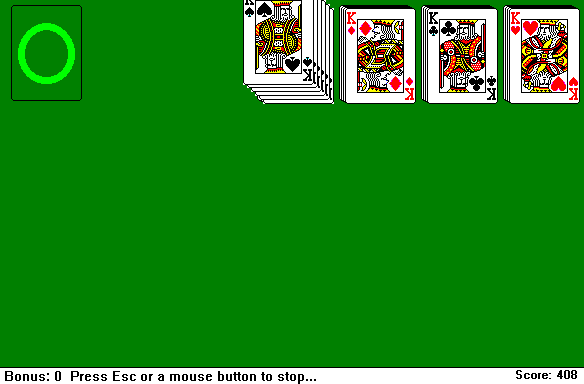
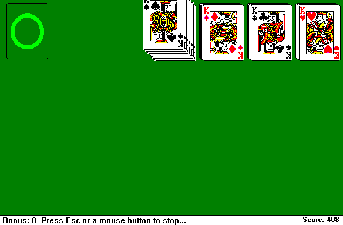

The sequel to the critically acclaimed greenfoot masterpiece, Womburger, this life-changing experience features a scrolling camera and world, items, enhanced mouse controls, and multiple abilities.
In a edutainment game inspired by Wii Play's Fishing Minigame, combine fun fishing gameplay with educational lessons to learn simple java!